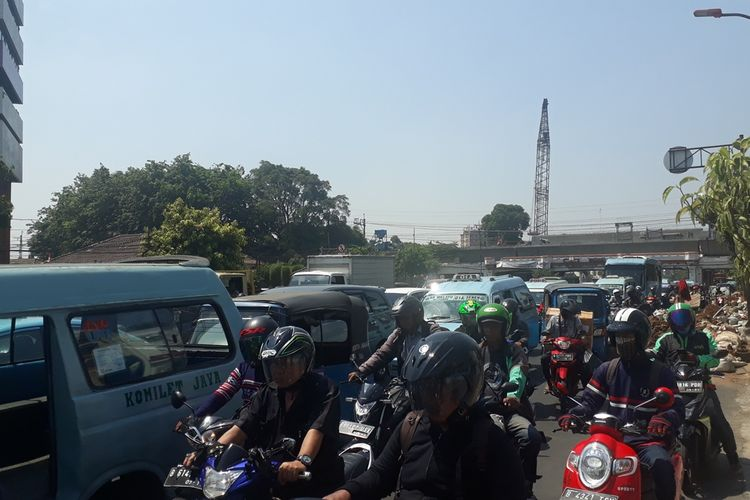
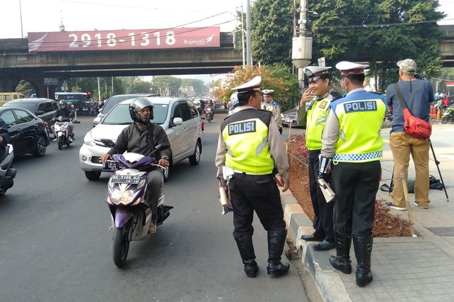

Sumber :https://www.kompas.com/
Pengguna sepeda motor di Jakarta jumlahnya sangat banyak. Untuk bisa mengendalikan jumlah motor yang ada di jalan, Pemerintah Provinsi DKI Jakarta pun memutuskan untuk memberlakukan sistem ganjil genap ( GaGe) untuk motor.
Keputusan tersebut menuai pro dan kontra, termasuk dari para komunitas motor. Di Jakarta dan sekitarnya, jumlah komunitas motor juga sangat banyak. Tak sedikit dari komunitas ini yang selalu mengandalkan kendaraannya untuk beraktivitas.Wahyudi, Sekretaris Honda MegaPro Club (HMPC) Indonesia, mengatakan, pihaknya mendukung diterapkannya sistem ganjil genap.

Komunitas Honda MegaPro Club (HMPC) Indonesia adalah salah satu komunitas yang mendukung diterapkannya sistem ganjil genap. Alasannya, yakni untuk meningkatkan kenyamanan di perjalanan. "Kami mendukung, karena untuk kenyamanan di perjalanan dengan jumlah kendaraan yang sangat meningkat kita mendukung kebijakan pemerintah," ujar Wahyudi, Sekretaris HMPC Indonesia, saat dihubungi Kompas.com, beberapa waktu lalu.
Sedangkan pendapat yang berbeda disampaikan oleh Denny Yamka, dari Dewan Penasehat Honda Tiger Mailing List (HTML) Selataners. Denny mengatakan, kebijakan itu masih belum layak diterapkan dan belum bisa menyelesaikan masalah yang ada.
"Perlu kajian mendalam, jika diterapkan, para pengguna roda dua akan lebih mempunyai motor cadangan. Misalnya, satu unit pelat ganjil dan satu unit pelat genap. Maka, akan menjadi lebih banyak kendaraan yang dimilikinya," kata Denny.
Menurut Denny, sebaiknya pembatasan kendaraaan dapat diidentifikasi untuk setiap warga dengan menggunakan kartu keluarga (KK). Misalnya, satu KK dibatasi dengan dua kendaraan mobil dan satu kendaraan motor. Sehingga dalam setiap keluarga benar-benar lebih selektif penggunaan kendaraan tersebut, dan aturan yang sudah ada tetap dijalankan.
kembali


 Copyright@2020
Copyright@2020